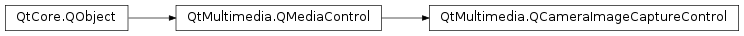

QCameraImageCaptureControl¶
Detailed Description¶
The
PySide2.QtMultimedia.QCameraImageCaptureControlclass provides a control interface for image capture services.The interface name of
PySide2.QtMultimedia.QCameraImageCaptureControlisorg.qt-project.qt.cameraimagecapturecontrol/5.0as defined inQCameraImageCaptureControl_iid().See also
-
class
PySide2.QtMultimedia.QCameraImageCaptureControl([parent=nullptr])¶ Parameters: parent – PySide2.QtCore.QObjectConstructs a new image capture control object with the given
parent
-
PySide2.QtMultimedia.QCameraImageCaptureControl.cancelCapture()¶ Cancel pending capture requests.
-
PySide2.QtMultimedia.QCameraImageCaptureControl.capture(fileName)¶ Parameters: fileName – unicode Return type: PySide2.QtCore.intInitiates the capture of an image to
fileName. ThefileNamecan be relative or empty, in this case the service should use the system specific place and file naming scheme.The Camera service should save all the capture parameters like exposure settings or image processing parameters, so changes to camera parameters after is called do not affect previous capture requests.
Returns the capture request id number, which is used later with
PySide2.QtMultimedia.QCameraImageCaptureControl.imageExposed(),PySide2.QtMultimedia.QCameraImageCaptureControl.imageCaptured()andPySide2.QtMultimedia.QCameraImageCaptureControl.imageSaved()signals.
-
PySide2.QtMultimedia.QCameraImageCaptureControl.driveMode()¶ Return type: PySide2.QtMultimedia.QCameraImageCapture.DriveModeReturns the current camera drive mode.
-
PySide2.QtMultimedia.QCameraImageCaptureControl.error(id, error, errorString)¶ Parameters: - id –
PySide2.QtCore.int - error –
PySide2.QtCore.int - errorString – unicode
- id –
-
PySide2.QtMultimedia.QCameraImageCaptureControl.imageAvailable(requestId, buffer)¶ Parameters: - requestId –
PySide2.QtCore.int - buffer –
PySide2.QtMultimedia.QVideoFrame
- requestId –
-
PySide2.QtMultimedia.QCameraImageCaptureControl.imageCaptured(requestId, preview)¶ Parameters: - requestId –
PySide2.QtCore.int - preview –
PySide2.QtGui.QImage
- requestId –
-
PySide2.QtMultimedia.QCameraImageCaptureControl.imageExposed(requestId)¶ Parameters: requestId – PySide2.QtCore.int
-
PySide2.QtMultimedia.QCameraImageCaptureControl.imageMetadataAvailable(id, key, value)¶ Parameters: - id –
PySide2.QtCore.int - key – unicode
- value – object
- id –
-
PySide2.QtMultimedia.QCameraImageCaptureControl.imageSaved(requestId, fileName)¶ Parameters: - requestId –
PySide2.QtCore.int - fileName – unicode
- requestId –
-
PySide2.QtMultimedia.QCameraImageCaptureControl.isReadyForCapture()¶ Return type: PySide2.QtCore.boolIdentifies if a capture control is ready to perform a capture immediately (all the resources necessary for image capture are allocated, hardware initialized, flash is charged, etc).
Returns true if the camera is ready for capture; and false if it is not.
It’s permissible to call
PySide2.QtMultimedia.QCameraImageCaptureControl.capture()while the camera status isQCamera.ActiveStatusregardless of property value. If camera is not ready to capture image immediately, the capture request is queued with all the related camera settings to be executed as soon as possible.
-
PySide2.QtMultimedia.QCameraImageCaptureControl.readyForCaptureChanged(ready)¶ Parameters: ready – PySide2.QtCore.bool
-
PySide2.QtMultimedia.QCameraImageCaptureControl.setDriveMode(mode)¶ Parameters: mode – PySide2.QtMultimedia.QCameraImageCapture.DriveModeSets the current camera drive
mode.
© 2018 The Qt Company Ltd. Documentation contributions included herein are the copyrights of their respective owners. The documentation provided herein is licensed under the terms of the GNU Free Documentation License version 1.3 as published by the Free Software Foundation. Qt and respective logos are trademarks of The Qt Company Ltd. in Finland and/or other countries worldwide. All other trademarks are property of their respective owners.